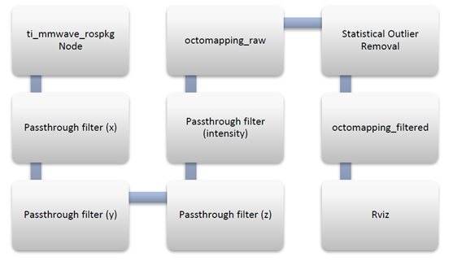
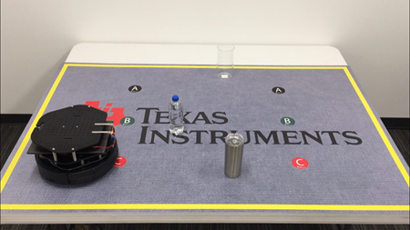

Autonomous Robotics with ROS for mmWave
===========
This lab allows for the TI mmWave sensor to be used with popular mapping and navigation libraries in the Robot Operating System (ROS) environment, familiar to many robotics engineers.
The lab uses the Octomap server and move_base libraries with TI’s mmWave ROS Driver Package software to interface to the TI mmWave sensor. The lab supports use of IWR6843ISK or IWR6843AOP ES2.0 EVMs.
With the TI driver and the software from the ROS community (ros.org) engineers may evaluate robot navigation and object avoidance quickly and easily.
This lab could also be used with either one or four sensors. With the use of four sensors, the robot has the ability to have a 360° field of view, thus the robot is able to detect surrounding objects for better mapping and navigation.
<img src="images/intro_senseavoid.gif" class="img-responsive"/>
## Hardware and Software Setup
Before starting this lab, please follow the directions described in the [ROS Setup Guide with TI mmWave](../common/ROS Setup for Autonomous mmWave.html).
Quickstart
===========
The guide is broken down into three sections: Remote Control Operation, Mapping Demo, and Autonomous Demo. The Remote Control section
explains how to bring up the sensor and drive the turtlebot remotely. The mapping demo uses the point cloud from the sensor to create a map of the
robot's environment. The robot must be manually operated. Finally, the autonomous demo
Remote Control Operation
===========
These steps must take place from the remote machine, “ssh-ing” into the TurtleBot laptop when
necessary.
##TurtleBot Bring-up
To start the TurtleBot, open a terminal window on the remote machine, ssh into the TurtleBot laptop
and run the following command. The `<device>` tag noted below can be one of the following: `6843ISK`, `6843AOP`, or `1843`.
* For setups running a single sensor:
```
$ roslaunch turtlebot_bringup minimal_single_sensor.launch mmwave_device:=<device>
```
* For setups running four sensors:
```
$ roslaunch turtlebot_bringup minimal_quad_sensor.launch mmwave_device:=<device>
```
If the EVM was not in a good state the roslaunch command will fail. Try resetting the EVM by pressing
the ‘NRST’ button on the EVM and then run the desired roslaunch command again.
After the Turtlebot and mmWave sensor are configured, you may see periodic “Kobuki : malformed subpayload
detected” errors. These errors appear to come from the Turtlebot driver and do not affect the
operation of the demo.
##Teleoperation (Remote Control)
Open a new terminal window on the remote machine and run the following command to bring up the
teleoperation (remote control) of the TurtleBot:
```
$ roslaunch turtlebot_teleop keyboard_teleop.launch
```
Follow the instructions shown in the window to control the TurtleBot. You can exit out of the remote
control application by pressing `CTRL-C`.
Mapping Demo
===========
The Mapping Demo is an example of how to use TI’s mmWave Radar EVMs within the ROS framework
on a robot to build a map. This feature is only supported with single sensor setups.
* The demo runs the octomap_server package in ROS. There are several filters that have been brought up
for use: Pass Through filters for all the point cloud fields, and a Statistical Outlier Removal filter for
filtering the raw map.
* **Pass Through Filters**: remove values outside a certain range for a given field (X, Y, Z, intensity)
* **Statistical Outlier Removal**: removes values based off their distance from their closest neighbors
* The parameters/limits for these filters can be found and modified in the
**turtlebot\_mmwave\_launchers/launch/radar\_limit\_filters.launch** file. The **radar_mapping.launch** file
mentioned below must be re-started after changing the **radar_limit_filters.launch** file in order for the
new parameters to take effect.
The processing graph for the incoming point cloud data is shown below:

##Start-up
To run the mapping demo, first follow the TurtleBot Bring-up and Remote Control instructions in the
“TurtleBot Bring-up and Teleoperation (Remote Control)” section to bring up and remote control the
TurtleBot. Then, to run the mapping demo open a new terminal window, ssh into the TurtleBot laptop
and run the following command:
```
$ roslaunch turtlebot_mmwave_launchers radar_mapping.launch
```
You may see a few warnings immediately after the launch file is run. It may also output a warning saying
“Nothing to publish, octree is empty” whenever there are no objects detected in front of the mmWave
sensor.
##Visualization
To view the TurtleBot, Radar data, and map data in Rviz open a new terminal window on the remote
machine and run the following command which will open a pre-defined Rviz configuration customized
for the mapping demo (the command is all one line):
```
$ rosrun rviz rviz -d ~/catkin_ws/src/turtlebot_mmwave_launchers/launch/mapping_visualization.rviz
```
Alternatively, you can run the following command to open a blank Rviz screen and then manually add
the same topics to the visualization as follows:
```
$ rosrun rviz rviz
```
* Once Rviz has started, add the radar data by selecting Add-> PointCloud2 and selecting /mmWaveDataHdl/RScan under the Topic dropdown menu for the PointCloud2.
* Make the following changes to improve the visualiation:
* Size to 0.03
* Style to Spheres
* Decay to 0.25
* To visualize the TurtleBot on the screen select Add->Robot Model and Rviz will automatically detect the robot
description and display the TurtleBot.
* To view the path the TurtleBot is taking select Add->Path and choose /trajectory under the Topic dropdown for the Path.
* To visualize the octomap output in Rviz, select Add->PointCloud2 and select `<raw_or_filtered>_point_cloud_centers`
* To color points by elevation change ColorTransformer to AxisColor.
* Changing the Size to 0.03 and Style to Spheres will improve the visualization.
You can also save a custom Rviz configuration and load it in the future for convenience.
##Saving a Map
* The TurtleBot laptop is now running the Radar and TurtleBot drivers, as well as all the filtering and
mapping nodes shown in the flow chart above.
* Move the TurtleBot around your environment manually until you are satisfied with your map.
* Then open a new terminal window on the remote machine, ssh into the TurtleBot laptop, and run the following command to save the map:
```
$ rosrun octomap_server octomap_saver –f <your_file_name>.bt
```
##Viewing a Previously Saved Map
* To view a saved `<map>.bt` file, you must first shutdown the mapping demo launch file if it was launched
by pressing CTRL-C in the window where the radar_mapping.launch file was launched.
* Rviz will need to be opened and configured as mentioned in the Visualization section above if it is not already open.
* Then, open a new terminal window on the remote machine, ssh into the TurtleBot laptop, and run the following command to serve the saved map (the command is all one line):
```
$ rosrun octomap_server octomap_server_node /path/to/<map>.bt octomap_point_cloud_centers:=filtered_point_cloud_centers
```
You should see the saved map displayed in Rviz. Note that the other topics in Rviz may show a
warning/error since they are not active.
Navigation Demo
===========
The TurtleBot navigation demo runs on the nodes mentioned in the image below.
<img src="images/setup_sw/ros_nodes.png" class="img-responsive"/>
Here are the steps to run the navigation demo:
1. Close all previous terminal windows if any were open
2. Open a new terminal window on the remote machine, ssh into the TurtleBot laptop and bring up the
TurtleBot and mmWave EVM with the following command.The `<device>` tag noted below can be one of the following: `6843ISK` or `6843AOP`.
* For setups running a single sensor:
```
$ roslaunch turtlebot_bringup minimal_single_sensor.launch mmwave_device:=<device>
```
* For setups running four sensors:
```
$ roslaunch turtlebot_bringup minimal_quad_sensor.launch mmwave_device:=<device>
```
If the EVM was not in a good state the roslaunch command will fail. Try resetting the EVM by pressing the ‘NRST’ button on the EVM and then run the desired roslaunch command again.
The configuration files are included in the ti_mmwave_ros_map_nav_v1p4.tar.gz package ...\ti_mmwave_ros_map_nav_v1p4\ti_mmwave_rospkg\cfg. To change the parameter, edit and save the file using a text editor. For example, to update the demo to run using the IWR6843ISK-ODS and configuration file used with the ODS point cloud demo
- Edit the "6843ISK_3d.cfg" configuration file to one that works with the ODS point cloud demo.
- Flash the IWR6843ISK-ODS with the ODS point cloud binary.
- Run the demo as documented for 6843ISK EVM.
3. To bring up the move_base and fake_localization nodes and load a prebuilt map using the
octomap_server, open a new terminal window on the remote machine, ssh into the TurtleBot
laptop and run the following command:
* For single sensor operation:
```
$ roslaunch turtlebot_mmwave_launchers radar_navigation_single.launch
```
* For quad sensor operation:
```
$ roslaunch turtlebot_mmwave_launchers radar_navigation_quad.launch
```
**Note 1**: By default, this launch file loads a specific prebuilt map file containing a map of a simple
rectangular space roughly 4ft x 6ft which can be used to make the robot stay within a space of that
size for demo and testing purposes.
* To load your own map, edit the radar_navigation.launch file and change the map filename shown in
bold below to your own saved map file.
*node name="octomap_server" pkg="octomap_server" type="octomap_server_node" args**="$(find
turtlebot_mmwave_launchers)/launch/map_4ft_by_6ft_border_large.bt** projected_map:=map" />*
* Alternatively, this static map can be completely disabled/removed as follows if desired to allow the
robot to plan paths freely without any artificial boundaries.
* Remove the line containing “costmap_2d::StaticLayer” in the global_costmap_params.yaml
and local_costmap_params.yaml param files
* Remove the line containing “octomap_server_node” in the ~catkin_ws/src/turtlebot_mmwave_launchers/launch/radar_navigation.launch file
* The size of the global and local costmaps can also be increased in the global_costmap_params.yaml and local_costmap_params.yaml param files to allow setting goals that are farther away
**Note2**: You may see “octree is empty” warnings when there are no objects detected in front of the mmWave sensor.
4. Open a new terminal window on the remote machine and run the following command which will
open a pre-defined Rviz configuration customized for the navigation demo.
* To show the inflation layer which is used for path planning (the command is all one line):
```
$ rosrun rviz rviz -d ~/catkin_ws/src/turtlebot_mmwave_launchers/launch/navigation_visualization.rviz
```
* To not show the inflation layer which is used for path planning (the command is all one line):
```
$ rosrun rviz rviz -d ~/catkin_ws/src/turtlebot_mmwave_launchers/launch/navigation_visualization_2.rviz
```
* Alternatively, you can run the following command to open a blank Rviz screen and then manually add the same topics to the visualization as follows:
```
$ rosrun rviz rviz
```
* “Add” three Map displays, one PointCloud2, the Robot Model, and one PosewithCovariance. Use the
Topic dropdowns on the displays you added in Rviz to select topics for each one.
* For the maps, choose “map” for one and the local and global cost maps for the other two.
* Select /initialpose for PosewithCovariance.
* You can select /mmWaveDataHdl/RScan or /xyzi_filt_out for the PointCloud2.
* Changing the Size to 0.03, Style to Spheres, and Decay to 0.25 will improve the PointCloud2 visualization.
* You can also add two Path topics (one for /move_base/DWAPlannerROS/local_plan and one for /move_base/DWAPlannerROS/global_plan) and a Polygon for /move_base/local_costmap/footprint.
* There is also an alternate pre-defined Rviz configuration file as an additional visualization example
located at “turtlebot_mmwave_launchers/launch/navigation_visualization_2.rviz” that adds a PointCloud for the voxel grid (/move_base/local_costmap/obstacle_layer/marked_cloud) and disables the costmaps.
5. Start the navigation by first providing an initial pose estimate. Select 2D Pose Estimate (along the
top of screen) and click on the location where the TurtleBot is within the map and drag in the
direction it is facing. You should see the TurtleBot appear on the same spot you click immediately
after releasing.
Note: Please do not choose a starting position or goal that is too close to the boundaries of the
current map as the navigation stack will not be able to create what it considers to be a valid path.
6. Now, give the TurtleBot a navigation goal by selecting 2D Nav Goal and clicking the location you
would like the TurtleBot to navigate towards and dragging in the direction you would like it to face.
The TurtleBot should then begin navigation to its goal. If you need to stop it, terminate the
radar_navigation.launch roslaunch command by clicking on the terminal window that was used to
launch it and pressing CTRL-C.
7. As an alternative to manually specifying the initial pose and goal using Rviz, there is also an example
shell script in the “turtlebot_mmwave_launchers/scripts” directory that you can call from the Linux
command prompt to set the initial pose and goal. It is intended to be used with the default 4ft x 6ft
prebuilt map where you start the robot on one of three starting points (a, b, or c) at one end of the
rectangular space facing the opposite end and then send it to one of the three goal points at the
other end. This is useful for demonstrating obstacle avoidance in a 4ft x 6ft space as shown in the
following picture. To run the script, go to the “turtlebot_mmwave_launchers/scripts” directory and
type “./start_nav.sh” at the Linux prompt.

Need More Help?
===========
* Fort Turtlebot2 issues and questions: <http://wiki.ros.org/Robots/TurtleBot#Robots.2BAC8-TurtleBot.2BAC8-kinetic.TurtleBot2>
* For ROS related questions: <https://answers.ros.org/questions/>
* Additional resources in the documentation of the mmWave SDK (note hyperlinks will only work if the mmWave SDK has been installed on PC):
* [mmWave SDK Module Doc located at `<mmwave_sdk_install_dir>/docs/mmwave_sdk_module_documentation.html`](file:///C:/ti/mmwave_sdk_03_05_00_04/docs/mmwave_sdk_module_documentation.html)
* [mmWave SDK User's Guide located at `<mmwave_sdk_install_dir>/docs/mmwave_sdk_user_guide.pdf`](file:///C:/ti/mmwave_sdk_03_05_00_04/docs/mmwave_sdk_user_guide.pdf)
* [mmWave SDK Release Notes located at `<mmwave_sdk_install_dir>/docs/mmwave_sdk_release_notes.pdf`](file:///C:/ti/mmwave_sdk_03_05_00_04/docs/mmwave_sdk_release_notes.pdf)
* Find answers to common questions on [mmWave E2E FAQ](https://e2e.ti.com/support/sensors/f/1023/t/595725)
* Search for your issue or post a new question on the [mmWave E2E forum](https://e2e.ti.com/support/sensor/mmwave_sensors/f/1023)